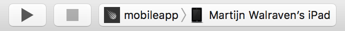
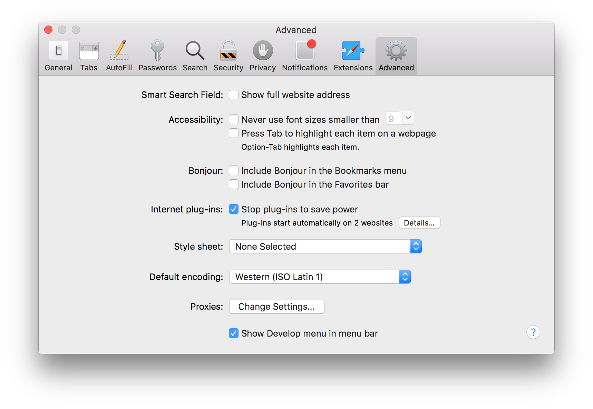

After reading this guide, you’ll know:
- What Cordova is, and how Meteor integrates with it to build mobile apps from a single codebase
- How to set up your local machine for mobile development
- How to run and debug your app on a mobile device or simulator/emulator
- How hot code push allows you to update your mobile app’s code without reinstalling the app on your device or submitting a new version to the store
- How to use Cordova plugins to take advantage of native device features
- How to access local files and remote resources from your app
- What you can do to create a good mobile user experience for your app
- How to configure your app to use your own app icon, launch screen, and set other preferences
- How to build your project and submit your mobile app to the store
Introduction to Meteor’s built-in mobile integration
Meteor integrates with Cordova, a well-known Apache open source project, to build mobile apps from the same codebase you use to create regular web apps. With the Cordova integration in Meteor, you can take your existing app and run it on an iOS or Android device with a few simple commands.
A Cordova app is a web app written using HTML, CSS, and JavaScript as usual, but it runs in a web view embedded in a native app instead of in a stand-alone mobile browser. An important benefit of packaging up your web app as a Cordova app is that all your assets are bundled with the app. This ensures your app will load faster than a web app running on a remote server could, which can make a huge difference for users on slow mobile connections. Another feature of the Cordova integration in Meteor is support for hot code push, which allows you to update your app on users’ devices without going through the usual app store review process.
Cordova also opens up access to certain native device features through a plugin architecture. Plugins allow you to use features not usually available to web apps, such as accessing the device camera or the local file system, interact with barcode or NFC readers, etc.
Because a Cordova app is a web app, this means you use standard web elements to create your user interface instead of relying on platform-specific native UI components. Creating a good mobile user experience is an art in itself, but is fortunately helped by the availability of various frameworks and libraries.
What about PhoneGap?
You may have heard of PhoneGap, and wonder how it relates to Cordova. PhoneGap is a product name used by Adobe since 2011, when they acquired a company called Nitobi, the original creators of what is now the Cordova project. When Adobe donated the code to Apache in 2012 to ensure a more open governance model, the open source project was rebranded as Cordova. PhoneGap is now one of the distributions of Cordova, on a par with other distributions like Ionic, Telerik, Monaca, or Intel XDK. These distributions mainly differ in tooling and integration with cloud services, but they share the underlying platform and plugins. Meteor could also be considered a Cordova distribution.
How does the Cordova integration in Meteor work?
With Meteor, there is no need to install Cordova yourself, or use the cordova command directly. Cordova project creation happens as part of the Meteor run and build commands, and the project itself is considered a build artifact (stored in .meteor/local/cordova-build in your app directory) that can be deleted and recreated at any time. Instead of having you modify Cordova’s config.xml file, Meteor reads a mobile-config.js file in the root of your app directory and uses the settings specified there to configure the generated project.
Cordova apps don’t load web content over the network, but rely on locally stored HTML, CSS, JavaScript code and other assets. While Cordova by default uses file:// URLs to load the app, Meteor includes an integrated file serving mechanism on the device to support both bundling the initial assets and incrementally updating your app through hot code push. This means your app will be served from http://localhost:<port>, which also has the benefit that web views consider it a secure origin and won’t block any sensitive features (which they increasingly do for file:// URLs).
What port will your app be served from?
While Meteor uses a built-in request interception mechanism on Android, supporting
WKWebViewon iOS requires running a real embedded web server instead. That means the local web server needs a port to bind to, and we can’t simply use a fixed port because that might lead to conflicts when running multiple Meteor Cordova apps on the same device. The easiest solution may seem to use a randomized port, but this has a serious drawback: if the port changes each time you run the app, web features that depend on the origin (like caching, localStorage, IndexedDB) won’t persist between runs, and you also wouldn’t be able to specify a stable OAuth redirect URL. So instead we now pick a port from a predetermined range (12000-13000), calculated based on theappId, a unique identifier that is part of every Meteor project. That ensures the same app will always use the same port, but it hopefully avoids collisions betweens apps as much as possible. (There is still a theoretical possibility of the selected port being in use. Currently, starting the local server will fail in that case.)
What environment does your Cordova app run in?
Cordova apps run in a web view. A web view is basically a browser without the browser UI. Browser engines differ in their underlying implementation and in what web standards they support. As a result, what web view your app runs on can have a huge impact on your app’s performance and on the features you get to use. (If you want to know what features are supported on what browsers and versions, caniuse.com is a great resource.)
iOS
The browser on iOS is Safari, which is based on the open source WebKit project, but tends to be somewhat slow in enabling new features. Because they use the same underlying framework, the features available to a web view match the features supported by Safari on the iOS release you’re running on.
Meteor uses WKWebView by default, on both iOS 8 and iOS 9. WKWebView is part of the modern WebKit API introduced in iOS 8, and replaces UIWebView, which has been in iOS from the beginning. Its main benefit is that it runs in a separate process, allowing for much higher JavaScript performance (3–4x in some benchmarks!) because it can take advantage of Just-In-Time compilation (which UIWebView, running in the same process as your app, cannot do for security reasons).
You may be aware that WKWebView on iOS 8 doesn’t allow files to be loaded from the local filesystem. This is problematic for standard Cordova apps, because these use
file://URLs to load the app. But because the Meteor integration serves assets fromlocalhost, WKWebView works fine on both iOS 8 and iOS 9.
Android
The web view situation on Android is a little more complicated. On older Android versions, the included web view is known to be rather slow and buggy. That improved somewhat with Android 4.4, which includes a web view based on Chromium, the open source project behind the Chrome browser.
Android 5.0 also comes with a web view based on Chromium known as the Android System Web View, but a big improvement is that it can be automatically updated through the Play Store. This means updates to the web view happen more regularly and are independent of OS updates.
This threatens to leave many older Android devices behind however, because they would be stuck on the web view included with the OS and are often unable to update to newer OS versions. Fortunately, the Crosswalk plugin allows you to embed Chromium in your app and use it instead of the web view that comes with the OS on any of the Android versions supported by Cordova (currently Android 4.0 or higher). Embedding Chromium means the size of your APK will grow by about 20MB, but the benefit is that you can rely on a consistent web view with considerably better performance and enhanced standards support.
You can add the Crosswalk plugin to your app with meteor add crosswalk.
If you receive an error message trying to run the app on your device after adding or removing the Crosswalk plugin, you may have to remove the existing app from your device first.
Adding Cordova platforms to your app
Every Meteor project targets a set of platforms. Platforms can be added to a Meteor project with meteor add-platform.
meteor add-platform iosadds the iOS platform to a project.meteor add-platform androidadds the Android platform to a project.meteor remove-platform ios androidwill remove the iOS and Android platforms from a project.meteor list-platformslists the platforms targeted by your project.
If your local machine does not (yet) fulfill the prerequisites for building apps for a mobile platform, an error message with a list of missing requirements is printed (but the platform is still added). You will have to make sure these requirements are fulfilled before you’re able to build and run mobile apps from your machine.
Installing prerequisites
In order to build and run mobile apps, you will need to install some prerequisites on your local machine.
iOS
In order to build and run iOS apps, you will need a Mac with Xcode 7.2 or higher installed.
Installing Xcode from the App Store
meteor add-platform ios will open a dialog asking you whether you want to install the ‘command line developer tools’. Do not select ‘Install’ here, because a full Xcode installation is required to build and run iOS apps. Instead, selecting ‘Get Xcode’ will open the Mac App Store page for Xcode and you can click install there. (Alternatively, you can open the Mac App Store and search for ‘Xcode’ to get to that same page.)
Accepting the license agreement
After the download and installation completes, you will need to accept the license agreement. If you start Xcode for the first time, a dialog will pop up where you can read the license agreement and accept it. You can close Xcode directly afterwards.
A shortcut is to run sudo xcodebuild -license accept from the command line. (You will still be expected to have read and understood the Xcode and Apple SDKs Agreement).
Android
In order to build and run Android apps, you will need to:
- Install a Java Development Kit (JDK)
- Install the Android SDK and download the required tools, platforms, and other components (which is done most easily by installing Android Studio)
- Set
ANDROID_HOMEand add the tools directories to yourPATH - Optionally: Create an Android Virtual Device to run apps on an emulator
Installing the Java Development Kit (JDK)
On Linux, you may want to use your distribution’s package manager to install a JDK; on Ubuntu, you can even use Ubuntu Make to install Android Studio and all dependencies at the same time.
- Open the Oracle Java website, and select the Java Platform (JDK)
- Check the box to accept the license agreement, and select the correct download for your platform
- After it has downloaded, launch the installer, and complete the installation steps
Installing Android Studio
The easiest way to get a working Android development environment is by installing Android Studio, which offers a setup wizard on first launch that installs the Android SDK for you, and downloads a default set of tools, platforms, and other components that you will need to start developing.
Please refer to the Android Studio installation instructions for more details on the exact steps to follow.
There is no need to use Android Studio if you prefer a stand-alone install. Just make sure you install the most recent versions of the Android SDK Tools and download the required additional packages yourself using the Android SDK Manager. Make sure to select SDK Platform API 23, because that is what the version of Cordova we bundle requires.
Using Ubuntu Make
If you’re running Ubuntu, the easiest way to install both a Java Development Kit and Android Studio is by using Ubuntu Make, a command line tool that sets up development environments and dependencies for you.
If you’re on Ubuntu 14.04 LTS, you’ll have to add the Ubuntu Make ppa first:
sudo add-apt-repository ppa:ubuntu-desktop/ubuntu-makesudo apt-get update
Then, you can install Ubuntu Make itself:
sudo apt-get install ubuntu-make
And finally you use Ubuntu Make to install Android Studio and all dependencies:
umake android
Setting ANDROID_HOME and adding the tools directories to your PATH
Cordova will detect an Android SDK installed in various standard locations automatically, but in order to use tools like android or adb from the terminal, you will have to make some changes to your environment.
Mac
- Set the
ANDROID_HOMEenvironment variable to the location of the Android SDK. If you’ve used the Android Studio setup wizard, it should be installed in~/Library/Android/sdkby default. - Add
$ANDROID_HOME/tools, and$ANDROID_HOME/platform-toolsto yourPATH
You can do this by adding these lines to your ~/.bash_profile file (or the equivalent file for your shell environment, like ~/.zshrc):1
2
3# Android
export ANDROID_HOME="/Users/<username>/Library/Android/sdk"
export PATH=$PATH:$ANDROID_HOME/tools:$ANDROID_HOME/platform-tools
You will then have to reload .bash_profile (by executing source ~/.bash_profile) or open a new terminal session to apply the new environment.
Optionally: Creating an Android Virtual Device (AVD) to run apps on an emulator
The current Android emulator tends to be rather slow and can be unstable, so our recommendation is to run your app on a physical device instead.
If you do want to run on an emulator however, you will have to create an Android Virtual Device (AVD) using the AVD Manager. Make sure to configure one with API level 23, because that is what the version of Cordova we bundle requires.
Running your app on a mobile device for development
During development, the Meteor build tool integrates with Cordova to run your app on a physical device or the iOS Simulator/Android emulator. In addition to starting a development server and MongoDB instance as usual, meteor run accepts arguments to run the app on one or more mobile targets:
ios: Runs the app on the iOS SimulatorCurrently, this will always run your app on a simulated iPhone 6s Plus. Use
ios-deviceto open Xcode and select another simulator instead.ios-device: Opens Xcode, where you can run the app on a connected iOS device or simulatorandroid: Runs the app on the Android emulatorThe current Android emulator tends to be rather slow and can be unstable. Our recommendation is to run on a physical device or to use an alternative emulator like Genymotion.
android-device: Runs the app on a connected Android device
You can specify multiple targets, so meteor run ios android-device will run the app on both the iOS Simulator and an Android device for example.
Connecting to the server
A Meteor app should be able to connect to a server in order to load data and to enable hot code push, which automatically updates a running app when you make changes to its files. During development, this means the device and the computer you run meteor on will have to be part of the same WiFi network, and the network configuration shouldn’t prevent the device from reaching the server. You may have to change your firewall or router settings to allow for this (no client isolation).
meteor run will try to detect the local IP address of the computer running the command automatically. If this fails, or if you would like your mobile app to connect to a different server, you can specify an address using the --mobile-server option.
How to run your app on an iOS device
Note: If you haven’t previously developed iOS apps, or haven’t used the connected device for development, a series of dialogs and warnings may appear as Xcode resolves code signing issues. It may also prompt you for permission to access the key in your keychain. See Apple’s instructions for more information.
- Make sure the device is connected to your computer via a USB cable.
- Connect the device to a WiFi network that allows for communication with the server.
- Run
meteor run ios-deviceto open your project in Xcode. - In the project navigator, choose your device from the Scheme toolbar menu:

- Click the Run button:
 - Xcode builds the app, installs it on the device, and launches it.
How to run your app on an Android device
- Make sure the device is connected to your computer via a USB cable.
- Connect the device to a WiFi network that allows for communication with the server.
- Make sure your device is set up for development as explained here.
- You may also need to click ‘Allow’ on the
Allow USB debugging?prompt on the device. - Run
meteor run android-deviceto build the app, install it on the device, and launch it.
To check if your device has been connected and set up correctly, you can run
adb devicesto get a list of devices.
Using logging and remote debugging tools
A full-stack mobile app consists of many moving parts, and this can make it difficult to diagnose issues. Logging is indispensable in keeping track of what’s going on in your app, and may show warnings and errors that you would otherwise miss. Even more powerful is remote debugging, which is the ability to interact with a mobile app running on a remote device from a debugging interface in Safari (for iOS) or Chrome (for Android).
Understanding the different types of logs
You will encounter three types of logs in a Meteor Cordova app:
- Server-side logs - Messages printed by the Meteor build system, and the result of
consolelogging calls from server-side code. - Client-side web logs - Warnings and errors from the web view, and the result of
consolelogging calls from client-side code. - Client-side native logs - Messages from system components and Cordova plugins. This also includes more detailed logging from the Meteor plugin used for hot code push.
When using meteor run, server-side logs will be printed in the terminal as usual. In addition, running on an Android device or emulator will print a subset of the logs to that same terminal (these logs also include console logging calls made from client-side code).
Running on iOS will not show client-side logs in the terminal, but Xcode will show native logs as usual in the debug console. You can add cordova-plugin-console to your project to output console logging calls to the native logs (which Android does by default), but this isn’t recommended because it has a substantial performance impact, and remote debugging gives you much nicer and more complete console output.
Although having client-side logs in the terminal can be useful, in most cases remote debugging is a much better option. This allows you to use the debugging tools built into Safari (for iOS apps) or Chrome (for Android apps) to investigate an app running on a remote device or a simulator/emulator. Here, you can not only view the logs, but also interact with running JavaScript code and the DOM, monitor network access, etc.
How to remote debug your iOS app with Safari
To use remote debugging in Safari, you’ll first need to enable the Developer menu. Go to Safari > Preferences and make sure ‘Show Develop menu in menu bar’ is checked:
You’ll also need to enable the Web Inspector on your iOS device. Go to Settings > Safari > Advanced and enable ‘Web Inspector’:

Launch the app on your device and open remote debugger by choosing Develop > <Your device> > <Your app>/localhost.
Because you can only connect to your app after it has started up, you sometimes miss startup warnings and errors. You can invoke
location.reload()in the Web Inspector console to reload a running app, this time with the remote debugger connected.
You can find more information about remote debugging in the Safari Developer Guide.
How to remote debug your Android app with Chrome
See this article for instructions on how to remote debug your Android app with the Chrome DevTools.
- Because you can only connect to your app after it has started up, you sometimes miss startup warnings and errors. You can invoke
location.reload()in the DevTools console to reload a running app, this time with the remote debugger connected.
Hot code push on mobile
During development, the Meteor build tool detects any relevant file changes, recompiles the necessary files, and notifies all connected clients a new version is available. Clients can then automatically reload the app, switching over to the new version of the code. This is referred to as hot code push.
Meteor supports hot code push on both browser and mobile clients, but the process on mobile is a bit different. In a browser, reloading the app will re-request assets from the server, and the server will respond with the most recent versions. Because Cordova apps rely on locally stored assets however, hot code push on mobile is a two step process:
- Updated assets are downloaded from the server using native downloading mechanisms, and stored on the device
- The page is reloaded and the web view re-requests the assets from the local web server
An important benefit of this is that while downloading may be slow over mobile connections, this is done in the background, and we won’t attempt to reload the app until all assets have been downloaded to the device.
Downloading updates is done incrementally, so we only download assets that have actually changed (based on a content hash). In addition, if we haven’t been able to download all changed assets in one go, because of a network failure or because the app was closed before we finished, we will reuse the ones that have already completed downloading the next time the app starts up or the network connection is restored.
Updating apps in production
Hot code push greatly improves the development experience, but on mobile, it is also a really useful feature for production apps, because it allows you to quickly push updates to devices without having users update the app through the store and without going through a possibly lengthy review process to get your update accepted.
However, it is important to realize that hot code push can only be used to update the HTML, CSS, JavaScript code and other assets making up your web app. Changes to native code will still require you to submit a new version of your app to the store.
In order to avoid a situation where JavaScript code that relies on changed native code is pushed to a client, we calculate a compatibility version from the Cordova platform and plugin versions, and only download a new version to a device when there is an exact match. This means any change to the list of plugins, or updating to a Meteor release which contains a new platform version, will block hot code push to existing mobile clients until the app has been updated from the store.
Something else to keep in mind is that your server-side code should be prepared to handle requests from older client versions, which may not yet have been updated. As you make changes to your data schema or publication functions for example, you may want to reflect on how this will impact backwards compatibility.
Configuring your server for hot code push
As mentioned before, mobile apps need to be able to connect to a server to support hot code push. In production, you will need to specify which server to connect to when building the app using the --server option. The specified server address is used to set ROOT_URL in __meteor_runtime_config__, which is defined as part of the generated index.html in the app bundle.
In addition, you will need to configure the server with the right connection address. This happens automatically if you’re using meteor deploy to deploy to Galaxy, but when deploying to your own server you’ll have to make sure to define the ROOT_URL environment variable there. (For Meteor Up, you can configure this in mup.json.)
The reason this is needed is because updates delivered through hot code push replace the initially bundled index.html with a freshly generated one. If the ROOT_URL on your server hasn’t been set, it defaults to localhost:3000, and this would leave the app unable to connect to the server, both for data loading and for receiving further hot code pushes. In Meteor 1.3, we protect against this by blocking updates that would change the ROOT_URL to localhost, but the consequence of this is that hot code push is disabled until you configure ROOT_URL correctly.
Recovering from faulty versions
Hot code pushing updated JavaScript code to a device could accidentally push code containing errors, which might leave users with a broken app (a ‘white screen of death’, in the worst case), and could even disable hot code push (because the code that makes a connection to the server may no longer run).
To avoid this, we try to detect faulty versions and revert to the last known good version when this happens. The way detection works is that we expect all Meteor.startup() callbacks to complete within a set period of time. If this doesn’t happen we consider the version faulty and will rollback the update. Unless the version on the server has been updated in the meantime, the server will try to hot code push the faulty version again. Therefore, we blacklist faulty versions on the device so we know not to retry.
By default, the startup timeout is set to 20 seconds. If your app needs more time to startup (or considerably less), you can use App.setPreference to set WebAppStartupTimeout to another value.
Using native device features with Cordova plugins
Cordova comes with a plugin architecture that opens up access to features not usually available to web apps. Plugins are installable add-ons that contain both JavaScript and native code, which allows them to translate calls from your web app to platform-specific APIs.
The Apache Cordova project maintains a set of core plugins that provide access to various native device features such as the camera, contacts, or access to the file system. But anyone can write a Cordova plugin to do basically anything that can be done from native code, and many third-party plugins are available. You can search for plugins on the Cordova website or directly on npm.
Be warned however, that although the core plugins are generally well maintained and up to date with the rest of Cordova, the quality of third-party plugins can be a bit of a gamble. You also have to make sure the plugin you want to use is compatible with the Cordova platform versions Meteor bundles.
Installing plugins
Plugins are identified by a name, which is generally the same as their npm package name. The current convention is for plugin names to start with cordova-plugin-, but not all third-party plugins adhere to this.
You can add Cordova plugins to your project either directly, or as a dependency of a Meteor package.
If you want to add a plugin to your project directly, you use the same meteor add command you use for Meteor packages, but with a cordova: prefix:
1 | meteor add cordova:cordova-plugin-camera@1.2.0 |
In contrast to Meteor packages, you’ll have to specify the exact version of the plugin. This can be a bit of a pain because you first need to look up what the most recent (compatible) version of a plugin is before you can add it.
A Meteor package can register a dependency on a Cordova plugin with the Cordova.depends() syntax. For example, a Meteor package that depends on the Cordova camera plugin would add the following to its package.js:
1 | Cordova.depends({ |
This means adding the Meteor package to your project would also install the specified Cordova plugin.
Note: If multiple Meteor packages add the same Cordova plugin but at different versions, there is no clear way of telling which version will end up being installed. Plugins added to your project directly however, will always override versions of the same plugin added as a dependency of packages.
Because installing plugins into a Cordova project already containing plugins can lead to indeterminate results, Meteor will remove and add back all plugins whenever a change to any of the plugins in your project is made.
Cordova downloads plugins from npm, and caches them (in ~/.cordova/lib/npm_cache) so they don’t have to be downloaded repeatedly if you rebuild or use them again in another project.
Making sure a plugin is compatible with the bundled Cordova platform versions
Because there is a tight coupling between plugin versions and Cordova platform versions, you may encounter build time or runtime errors as a result of incompatible plugins. If this happens, you will have to install a different plugin version, or it may turn out a plugin is not (yet) compatible with the Cordova platform versions we bundle.
In order to help with this, we pin core plugins to a minimum version known to work with the Cordova versions we bundle. This mechanism doesn’t apply to third-party plugins however, so you’ll have to assess compatibility for these yourself.
There is ongoing work in the Cordova project that will improve this situation and make it easier for plugins to specify their platform dependencies, so Cordova can determine compatible versions.
Setting plugin parameters
Some Cordova plugins require certain parameters to be set as part of the build process. For example, com-phonegap-plugins-facebookconnect requires you to specify an APP_ID and APP_NAME. You can set these using App.configurePlugin in your mobile-config.js.
Installing a plugin from Git
Alternatively, if unreleased changes have been made to a plugin you’d like to use, you can also have Cordova download plugin code from a Git repository. Note that this will clone the plugin repository on every rebuild however, so this can be rather slow and should be avoided where possible. In contrast to default Cordova, Meteor requires you to specify the exact SHA hash for a commit, rather than allow you to refer to a branch or tag. This is done to guarantee repeatable builds and also avoids unnecessary reinstallation of all plugins because as long as the SHA is the same we know nothing has changed.
The syntax to add a plugin from Git is kind of awkward. The name (the part before the @) is the plugin ID and will have to match what is specified in the plugin’s plugin.xml. Instead of a version, you specify a URL to a Git repository with the SHA hash as an anchor (the part after the #):
1 | meteor add cordova:com.phonegap.plugins.facebookconnect@https://github.com/Wizcorp/phonegap-facebook-plugin.git#5dbb1583168558b4447a13235283803151cb04ec |
Meteor packages can also depend on plugins downloaded from Git:
1 | Cordova.depends({ |
Installing a plugin from the local file system
Finally, especially if you’re developing your own plugin, installing it from the local filesystem can be a convenient way to keep up with changes you make to plugin code. The downside of this is that Meteor will reinstall all plugins on every build however, so this could really slow things down. We do add local plugins with the --link option however, so Cordova will try to install the plugin’s files using symlinks instead of copying them, which means changes to files will be reflected in the generated native project (e.g. an Xcode project) and may not require a rebuild.
You install plugins from the local file system by specifying a file:// URL, which gets interpreted relative to the project directory:
1 | meteor add cordova:cordova-plugin-underdevelopment@file://../plugins/cordova-plugin-underdevelopment |
Meteor packages can also depend on plugins installed from the local file system, although this probably only makes sense for local packages:
1 | Cordova.depends({ |
Removing directly installed plugins
You can remove a previously added plugin using meteor remove:
1 | meteor remove cordova:cordova-plugin-camera |
Using plugins
You should wrap any functionality which relies on a Cordova plugin in a Meteor.startup() block to make sure the plugin has been fully initialized (by listening to the deviceready event). For example, when using the Cordova geolocation plugin:
1 | // The plugin may not have been initialized here |
Adding Cordova-specific JavaScript code to your application
Just as you can use Meteor.isServer and Meteor.isClient to separate your client-side and server-side code, you can use Meteor.isCordova to separate your Cordova-specific code from the rest of your code.
1 | if (Meteor.isServer) { |
In addition, packages can include a different set of files for Cordova builds and browser builds with addFiles:
api.addFiles('foo.js', 'web.cordova'): includesfoo.jsin only Cordova builds.api.addFiles('bar.js', 'web.browser'): includesbar.jsin only browser builds.api.addFiles('baz.js', 'web'): includesbaz.jsin all client builds.
The same syntax can be used for api.use, api.imply, and api.export.
Accessing local files and remote resources
As a web app, Cordova apps are subject to various security mechanisms designed to protect the integrity of your code and to avoid certain types of attacks. Which security mechanisms are in use may depend on the type and version of the web view your app runs in. In addition, Cordova itself, and in some cases the OS, adds different levels of access control that may also affect what content can and cannot be loaded. All this can make it fairly confusing to understand why something is not working, and even harder to understand the security implications of the various ways of configuring these mechanisms.
Accessing local files
Because the Cordova integration in Meteor does not serve your app from file:// URLs, access to local files through file:// URLs is not allowed either due to the same-origin policy.
The file serving mechanism used in Meteor allows for local file access through URLs of the form http://localhost:<port>/local-filesystem/<path>) however. You can construct these file system URLs manually, or use WebAppLocalServer.localFileSystemUrl() to convert file:// URLs. You can use this to convert URLs received from plugins like cordova-plugin-file and cordova-plugin-camera for example.
Domain whitelisting
Cordova controls access to external domains through a whitelisting mechanism, which is implemented as cordova-plugin-whitelist in the version of Cordova we bundle.
In Meteor, you use App.accessRule in mobile-config.js to set additional rules. (These correspond to <access>, <allow-navigation> and <allow-intent> tags in the generated config.xml.)
On iOS, these settings also control Application Transport Security (ATS), which is an OS level mechanism to enforce security best practices new to iOS 9. If the server you’re connecting to does not (yet) fulfill these requirements, you can use additional options to override them for specific domains:
2
3
4
'minimum-tls-version': 'TLSv1.0',
'requires-forward-secrecy': false,
});
By default, Cordova apps in Meteor are only allowed access to localhost (the device itself, to serve the app from) and the server your app connects to for data loading and hot code push (either an automatically detected IP address an explicitly configured mobile server domain). These restrictions also apply to loading files in iframes and to opening files in other apps (including the mobile browser).
Note that these restrictions mean you will have to explicitly allow loading
data:URLs. For example, to allow loadingdata:URLs in iframes you would add:
Content Security Policy (CSP)
In addition to the domain whitelisting mechanism Cordova implements, the web view itself may also enforce access rules through Content Security Policy (CSP). For now, Meteor adds a permissive <meta http-equiv="Content-Security-Policy" content="..." header to the generated index page. We may want to allow more fine grained control in the future (through integrating with the browser-policy package for instance.)
Cross-Origin Resource Sharing (CORS)
What is often confusing to people is that setting App.accessRule is not enough to allow access to remote resources. While domain whitelisting allows the client to control which domains it can connect to, additional restrictions based on the same-origin policy also apply. By default, web views will not allow cross-origin HTTP requests initiated from JavaScript for instance, so you will likely run into this when using XMLHttpRequest.
To get around these restrictions, you’ll have to use what is known as Cross-Origin Resource Sharing (CORS). In contrast to the whitelisting mechanism configured on the client, CORS relies on headers set by the server. In other words, in order to allow access to a remote resource, you may have to make configuration changes on the server, such as setting a Access-Control-Allow-Origin header.
Configuring your app
Meteor reads a mobile-config.js file in the root of your app directory during build, and uses the settings specified there to generate Cordova’s config.xml.
Metadata
1 | App.info({ |
Preferences
1 | App.setPreference('BackgroundColor', '0xff0000ff'); |
Refer to the preferences section of the Cordova documentation for more information about supported options.
App icons and launch screens
Although Meteor includes a standard set of app icons and launch screens, you’ll most likely want to configure your own images.
You configure these images with App.icons and App.launchScreens, which both use names to refer to the various supported image sizes (see API documentation).
For iOS, you can also refer to the Icon and image sizes in the iOS Human Interface Guidelines for more information about the way these different sizes are used.
Advanced build customization
There is a special top-level directory named cordova-build-override/ that allows you to override, in an ad-hoc way, parts of your Cordova project that Meteor generates for you in the .meteor/local/cordova-build directory. The entire file tree of this directory will be cp -R (copied overwriting existing files) to the Cordova project right before the build and compilation step.
The problem with this mechanism is that it overrides complete files, so it is not a good solution for customizing config.xml. Replacing the generated version with your own file means you lose all configuration information set by the build process and by installed plugins, which will likely break your app.
If you need to customize configuration files, a workaround is to create a dummy Cordova plugin. In its plugin.xml, you can specify a config-file element to selectively change parts of configuration files, including config.xml.
We recommend using these approaches only if absolutely required and if your customizations can not be handled by standard configuration options.
Submitting your mobile app to the store
Building your mobile app for production
Use meteor build <build-output-directory> --server <host>:<port> to build your app for production.
The <host> and <port> should be the address of the server you want your app to connect to.
This will generate a directory at <build-output-directory>, which includes a server bundle tarball and the project source for each targeted mobile platform in the /ios and /android directories.
You can pass --server-only to only build the server bundle. This allows you to build your app without installing the mobile SDKs on the build machine. This is useful if you use an automated deployment setup for instance. (If you remove the mobile platforms before building instead, hot code push will be disabled because the assets for Cordova included in the server bundle will not be generated.)
How to submit your iOS app to the App Store
In order to build your app for iOS, you will need to configure your app with at least a version number, and the required set of app icons and launch screens.
After running meteor build you can open the generated Xcode project in Xcode:1
2cd <build-output-directory>/ios/project
open MyApp.xcodeproj
From this point on, the process for building the app archive and submitting it to the App Store is the same as it would be for any other iOS app. Please refer to Apple’s documentation for further details.
How to submit your Android app to the Play Store
In order to build your app for Android, you will need to configure your app with at least a version number, and the required set of app icons and launch screens.
After running meteor build the generated APK will be copied from the <build-output-directory>/android/project/build/outputs/apk directory to <build-output-directory>/android/release-unsigned.apk.
Before submitting the APK(s) to the Play Store, you will need to sign the APK and run zipalign on it to optimize the archive.
(See the Android developer documentation for more details about the app signing procedure.)
To sign your app, you’ll need a private key. This key lets you publish and update your app. If you haven’t made a key for this app yet, run:1
keytool -genkey -alias your-app-name -keyalg RSA -keysize 2048 -validity 10000
Optionally, you can specify --keystore to use a different keystore. Don’t forget to specify the same keystore when signing the APK.
Note: Ensure that you have secure backups of your keystore (
~/.keystoreis the default). If you publish an app to the Play Store and then lose the key with which you signed your app, you will not be able to publish any updates to your app, since you must always sign all versions of your app with the same key.
Now, you can sign the APK:1
2cd ~/build-output-directory/android/
jarsigner -verbose -sigalg SHA1withRSA -digestalg SHA1 release-unsigned.apk your-app-name
Next, you can run zipalign on it to optimize the APK:1
$ANDROID_HOME/build-tools/<build-tools-version>/zipalign 4 release-unsigned.apk <your-app-name>.apk
From this point on, the process for submitting the app to the Play Store is the same as it would be for any other Android app. <your-app-name>.apk is the APK to upload to the store. Learn more by visiting https://play.google.com/apps/publish.
Submitting an app using Crosswalk to to Play Store
Because Crosswalk bundles native code for Chromium, you will end up with APKs for both ARM and x86. You can find the generated APKs in the <build-output-directory>/android/project/build/outputs/apk directory.
You will have to sign and zipalign both APKs. You will also have to submit both to the Play Store, see submitting multiple APKs for more information.